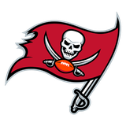
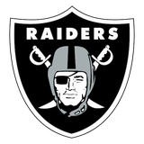

레이븐스 · 징계 · 11/20 06:42 KST
레이븐스 · 징계 · 11/20 06:42 KST제시 민터 감독은 팟캐스트에서 볼티모어를 두고 "범죄자를 가장 잘 만든다"고 말한 CB 말런 험프리를 팀 시설에서 귀가시키고, 일요일 팬서스전에 출전 명단에서 제외한다고 밝혔어요. 징계는 한 경기이며 험프리는 이번 주 남은 훈련에도 참가하지 않아요.
 IND
IND HOU
HOU MIA
MIA BUF
BUF NO
NO CHI
CHI TEN
TEN DAL
DAL
TB DET
DET ARI
ARI KC
KC PIT
PIT PHIBAL
PHIBAL CAR
CAR NYJ
NYJ LAC
LAC
LV DEN
DEN JAX
JAX NYG
NYG MIN
MIN SF
SF CIN
CIN WAS
WAS제시 민터 감독은 팟캐스트에서 볼티모어를 두고 "범죄자를 가장 잘 만든다"고 말한 CB 말런 험프리를 팀 시설에서 귀가시키고, 일요일 팬서스전에 출전 명단에서 제외한다고 밝혔어요. 징계는 한 경기이며 험프리는 이번 주 남은 훈련에도 참가하지 않아요.
자세히 보기 →레이븐스 · 징계 · 11/20 06:42 KST제시 민터 감독은 팟캐스트에서 볼티모어를 두고 "범죄자를 가장 잘 만든다"고 말한 CB 말런 험프리를 팀 시설에서 귀가시키고, 일요일 팬서스전에 출전 명단에서 제외한다고 밝혔어요. 징계는 한 경기이며 험프리는 이번 주 남은 훈련에도 참가하지 않아요.
 램스 · 징계 · 11/20 06:39 KST
램스 · 징계 · 11/20 06:39 KSTNFL은 푸카 나쿠아가 리그 개인 행위 규정을 어겨 3경기 출장 정지 징계를 받았다고 발표했어요. 나쿠아는 11월 12일 무릎 인대(PCL·MCL) 염좌와 터프 토로 IR에 들어가 있고, IR 기간 중에도 징계를 소화할 수 있어요. 복귀 자격은 현지 시간 12월 14일부터 생겨요.
 세인츠 · 방출 · 11/20 07:33 KST
세인츠 · 방출 · 11/20 07:33 KST브랜던 스테일리 수비 코디네이터는 베테랑 세이프티 저스틴 리드의 방출 요청을 두고 구단과 선수가 조율 중이며 곧 결론이 날 것이라고 말했어요. 리드는 팀 주장으로, 1년 사이 방출을 요청한 두 번째 주장이에요.
 브롱코스 · 계약 · 11/20 05:24 KST
브롱코스 · 계약 · 11/20 05:24 KST내년 3월 FA가 될 예정이던 라일리 모스가 2030 시즌까지 이어지는 4년 연장 계약에 서명했어요. 이로써 패트릭 서틴 2세와 모스, 주전 코너백 두 명이 모두 장기 계약으로 묶였어요.

발 부상으로 수요일 훈련을 쉰 베이커 메이필드가 목요일엔 제한적으로 참가했고, 일요일 라이언스 원정 출전을 노린다고 말했어요.
 카우보이스 · 코치 · 11/20 06:18 KST
카우보이스 · 코치 · 11/20 06:18 KST수비 플레이콜을 마이크 페티니에게 넘긴 크리스천 파커는 잠시 팀을 떠나는 것도 고민했지만, 여전히 수비 코디네이터로서 할 일이 있다고 말했어요.

 패트리어츠 · 명예의 전당 · 11/20 02:45 KST
패트리어츠 · 명예의 전당 · 11/20 02:45 KST패트리어츠 왕조를 이끈 빌 벨리칙 전 감독과 로버트 크래프트 구단주가 2027년 명예의 전당 최종 후보 15명에 올랐어요. 지난해에는 둘 다 탈락해 선정 방식에 대한 비판이 거셌어요.
 돌핀스 · QB · 11/20 02:33 KST
돌핀스 · QB · 11/20 02:33 KST돌핀스는 이번 주 빌스전에 말릭 윌리스 대신 카일 매코드를 선발 QB로 내세워요. 최근 백업 QB들을 상대로 위력을 보인 빌스 수비가 또 한 번 시험대에 올라요.
49ers · 이번 주 경기 · 11/20 06:25 KST11주차 멕시코시티 경기에서 리그 최고 수비의 바이킹스와 최고 공격의 49ers가 맞붙어요. 목요일 밤(한국 시간 금요일 오전)에는 텍산스-콜츠 AFC 남부 맞대결이 11주차의 문을 열어요.
 카우보이스 · 코치 · 11/19 06:29 KST
카우보이스 · 코치 · 11/19 06:29 KST브라이언 쇼튼하이머 감독은 크리스천 파커가 수비 코디네이터 직함은 유지하지만, 경기 당일 수비 플레이콜은 마이크 페티니가 맡는다고 밝혔어요. 전날 검토 중이던 역할 조정이 확정된 셈이에요.
램스 · 휴식 주간 · 11/18 20:00 KST램스는 11주차 휴식 주간을 맞아 선수들의 회복과 함께 팀 보완에 시간을 쓰고 있어요. 다음 경기는 12주차 홈 패커스전(11/26 목 10:00 KST)이에요.
 이글스 · QB · 11/19 03:57 KST
이글스 · QB · 11/19 03:57 KST닉 시리아니 감독은 이번 주 스틸러스전에도 QB 조 밀턴이 선발로 나서고, 숀 매니언이 계속 공격 플레이콜을 맡는다고 발표했어요.
 타이탄스 · 부상 · 11/19 04:45 KST
타이탄스 · 부상 · 11/19 04:45 KST전날 IR에 오른 완데일 로빈슨이 남은 시즌을 모두 결장한다고 로버트 살레 감독이 밝혔어요.
 제츠 · 부상 · 11/19 06:09 KST
제츠 · 부상 · 11/19 06:09 KST지노 스미스는 아직 눈에 띄게 절뚝이고 있지만 일요일 차저스전에 뛰는 것이 계획이라고 말했어요.
텍산스 · 이번 주 경기 · 11/19 03:58 KST11주차는 금요일 오전(한국 시간) 텍산스와 콜츠의 지구 라이벌전으로 시작해요. C.J. 스트라우드는 홈 부진을 끊어야 한다는 절박함을 강조했어요.
 팬서스 · 부상 · 11/19 07:37 KST
팬서스 · 부상 · 11/19 07:37 KST3주차에 사타구니 부상을 당한 주전 코너백 마이크 잭슨이 일요일 레이븐스전에 복귀할 계획이에요.
 레이븐스 · 논란 · 11/19 07:32 KST
레이븐스 · 논란 · 11/19 07:32 KST말런 험프리가 자신의 팟캐스트에서 볼티모어를 두고 한 부적절한 농담에 대해 공식 사과했어요.
 스틸러스 · 부상 · 11/19 04:43 KST
스틸러스 · 부상 · 11/19 04:43 KST카트에 실려 나갔던 메이슨 매코믹은 발목 골절이 아니어서 수술은 필요 없지만 부상자 명단(IR)에 올랐어요.
 재규어스 · 부상 · 11/19 01:41 KST
재규어스 · 부상 · 11/19 01:41 KST리엄 코엔 감독은 주전 센터 로버트 헤인지가 일요일 자이언츠전에 나서지 못한다고 밝혔어요.
 커맨더스 · 화제 · 11/19 03:50 KST
커맨더스 · 화제 · 11/19 03:50 KST올해 초 사이가 틀어졌던 브랜던 아이유크가 먼저 연락해 QB 제이든 대니얼스와 화해했다고 ESPN 소식통이 전했어요.
차저스 · 경기 결과 · 11/17 13:30 KST10주차 마지막 경기에서 차저스가 힘으로 밀어붙이는 경기 운영으로 레이븐스를 23-20으로 꺾었어요. 제이코비 브리셋이 340패싱야드, 신인 오마리온 햄프턴이 105러싱야드 1TD를 기록했어요. 레이븐스 카일 해밀턴은 경기 뒤 '지금 우리는 레이븐스의 기준을 욕보이고 있다'고 쓴소리를 했어요.
램스 · 부상 · 11/17 11:37 KST램스 주전 센터 콜먼 셸턴이 햄스트링을 다쳐 4~6주 동안 전열에서 이탈할 전망이에요. 램스는 이번 주 휴식 주간을 보낸 뒤 11/26 (목) 10:00 KST 패커스를 홈으로 불러요.
 카우보이스 · 코치 · 11/18 02:00 KST
카우보이스 · 코치 · 11/18 02:00 KST제리 존스 구단주 겸 단장이 라디오 인터뷰에서 파커 수비 코디네이터의 역할과 책임을 바꾸는 방안을 논의 중이라고 밝혔어요. 카우보이스는 49ers전에서 홈 경기 구단 역사상 최다인 584야드를 내줬고, 경기당 총 허용 야드·러싱 야드 모두 리그 최하위예요.
 돌핀스 · 부상 · 11/18 07:30 KST
돌핀스 · 부상 · 11/18 07:30 KST조던 필립스가 이두근 파열로 남은 시즌을 뛸 수 없게 돼 IR에 올랐어요. 최근 2주 사이 잭 실러, 지크 비거스에 이어 세 번째로 시즌 아웃된 돌핀스 DT예요.
 텍산스 · 부상 · 11/18 01:59 KST
텍산스 · 부상 · 11/18 01:59 KST사타구니 부상 중인 아지즈 알샤이르가 IR에 올라 최소 4경기를 결장해요. 7경기에서 68태클로 팀 1위였어요. 텍산스는 11/20 (금) 10:15 KST 콜츠와 목요일 밤 경기를 치러요.

NFL이 12주차 NBC 선데이 나이트 풋볼 경기를 패트리어츠-차저스에서 레이더스-브라운스로 바꿨어요. 패트리어츠-차저스 경기는 오후 4시 5분(ET) 시간대로 옮겨져요.
 타이탄스 · 부상 · 11/18 07:06 KST
타이탄스 · 부상 · 11/18 07:06 KST올봄 4년 7천만 달러에 계약한 완데일 로빈슨이 발목 부상으로 IR에 올라 최소 4경기를 쉬어요. 1라운드 신인 WR 카넬 테이트도 어깨 부상으로 빠져 있어 타이탄스 리시버진이 크게 얇아졌어요.
 라이온스 · 부상 · 11/18 01:35 KST
라이온스 · 부상 · 11/18 01:35 KST만성 무릎 부상으로 PUP 명단에서 시즌을 시작한 커비 조지프가 일요일 버커니어스전에서 시즌 데뷔할 계획이라고 댄 캠벨 감독이 밝혔어요. 캠벨 감독은 에이든 허친슨 부상에도 세리머니를 금지하지는 않겠다고 했어요.
 스틸러스 · 사건 · 11/18 07:23 KST
스틸러스 · 사건 · 11/18 07:23 KST피츠버그 경찰이 8월 말 이헤아나코르의 집에 침입해 20만 달러 넘는 보석과 명품을 훔친 혐의로 3명에게 체포영장을 발부했어요. 미 연방보안관실과 함께 캘리포니아에서 신병 확보에 나섰어요.
 라이온스 · 부상 · 11/17 04:24 KST
라이온스 · 부상 · 11/17 04:24 KST뮌헨 경기에서 색 세리머니 도중 오른쪽 무릎을 다친 에이든 허친슨이 1차 검사 결과 전방십자인대(ACL) 파열 진단을 받아 남은 시즌을 뛸 수 없게 됐다고 NFL 네트워크가 전했어요. 라이언스 수비의 핵심 전력이 빠지는 큰 타격이에요.
 패트리어츠 · 부상 · 11/17 05:46 KST
패트리어츠 · 부상 · 11/17 05:46 KSTESPN 애덤 셰프터에 따르면 패트리어츠는 드레이크 메이의 발목이 골절됐을 가능성을 걱정하고 있고, 장기 결장은 물론 남은 시즌을 통째로 놓칠 수도 있어요. 메이는 만일을 대비해 독일에 남았고, 마이크 브레이벌 감독은 메이가 돌아온 뒤 자세히 말하겠다고 했어요.

 패커스 · 부상 · 11/17 06:43 KST
패커스 · 부상 · 11/17 06:43 KST맷 라플러 감독은 마이카 파슨스가 추수감사절 전날 열리는 12주차 원정 경기에서 복귀하는 계획을 여전히 유지하고 있다고 밝혔어요. 애덤 셰프터도 파슨스가 12주차 복귀를 향해 순조롭게 회복 중이라고 전했어요.

 시호크스 · 부상 · 11/17 06:17 KST
시호크스 · 부상 · 11/17 06:17 KST마이크 맥도널드 감독은 대신 나선 드루 록이 잘해 줬지만 건강한 다널드가 여전히 주전이라며, 휴식 주간 뒤 49ers전 출전을 낙관한다고 말했어요. 다음 주 훈련을 모두 소화하는 것이 조건이에요.
 돌핀스 · 방출 · 11/17 03:46 KST
돌핀스 · 방출 · 11/17 03:46 KST콜츠전에서 필드골 2개와 추가 점수 1개를 놓친 제인 곤잘레스를 다음 날 웨이버했어요. 7주차에 합류한 뒤 3경기 연속 킥을 놓쳤고, 제프 해플리 감독은 '그 7점을 넣었어야 했다'고 말했어요.
 바이킹스 · 부상 · 11/17 05:30 KST
바이킹스 · 부상 · 11/17 05:30 KST케빈 오코널 감독은 애디슨이 연습 중 엄지를 다쳐 수술이 필요하며, 약 한 달 결장으로 단기 IR 기간 정도가 될 것이라고 밝혔어요. IR에 오르면 빨라야 15주차에 돌아올 수 있어요.
 카우보이스 · 부상 · 11/17 02:57 KST
카우보이스 · 부상 · 11/17 02:57 KSTESPN 소식통에 따르면 두 선수 모두 하이 앵클 염좌로 몇 주 동안 뛰지 못할 전망이에요. 수비 부진 비판을 받는 카우보이스에 악재가 겹쳤어요.
 제츠 · 코치 · 11/17 02:13 KST
제츠 · 코치 · 11/17 02:13 KST수비 부진이 길어지자 에런 글렌 감독이 일요일 경기부터 수비 플레이콜을 브라이언 듀커 수비 코디네이터에게 맡겼다고 밝혔어요. 발목을 다친 지노 스미스는 검사 중이지만 여전히 1번 QB라고 했어요.

시호크스전 후반을 통째로 쉰 브록 바워스는 큰 부상은 피했고, 매일 상태를 지켜보는 단계라고 해요.
 벵골스 · 경기 결과 · 11/16 22:07 KST
벵골스 · 경기 결과 · 11/16 22:07 KST일요일 밤 스틸러스전에서 조 버로우가 409패싱야드, TD 4개, 인터셉션 0개를 기록하며 벵골스 승리를 이끌었어요. 이 기록으로 톰 브래디, 페이튼 매닝에 이어 NFL 역사상 세 번째로 이름을 올렸어요.
 49ers · 부상 · 11/17 07:33 KST
49ers · 부상 · 11/17 07:33 KSTESPN이 의료 전문가와 함께 마이크 에번스의 아킬레스건염 진단과 복귀 시점, 완치 가능성을 짚었어요.